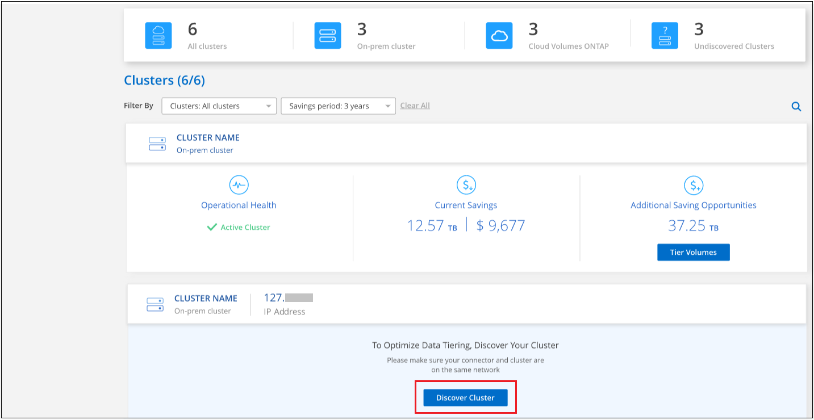

ドキュメントの変更をリクエスト
ドキュメントの変更をリクエスト GitHub で編集
GitHub で編集 寄稿者向けガイド
寄稿者向けガイドクラスタからのデータ階層化の管理
オンプレミスの ONTAP クラスタからデータ階層化を設定したので、追加のボリュームからデータを階層化したり、ボリュームの階層化ポリシーを変更したり、クラスタを追加したりできます。
追加のボリュームのデータを階層化する
新しいボリュームの作成後など、追加のボリュームのデータ階層化をいつでも設定できます。

|
オブジェクトストレージはクラスタの階層化の初期設定時にすでに設定されているため、設定する必要はありません。ONTAP は、アクセス頻度の低いデータを他のボリュームから同じオブジェクトストアに階層化します。 |
-
Cloud Manager の上部で、 * Tiering * をクリックします。
-
クラスタダッシュボード * で、クラスタの * 階層ボリューム * をクリックします。

-
_Tier Volume_page で、階層化を設定するボリュームを選択し、階層化ポリシーページを起動します。
-
すべてのボリュームを選択するには、タイトル行（
 ）をクリックし、 * ボリュームの設定 * をクリックします。
）をクリックし、 * ボリュームの設定 * をクリックします。 -
複数のボリュームを選択するには、各ボリュームのボックス（
 ）をクリックし、 * ボリュームの設定 * をクリックします。
）をクリックし、 * ボリュームの設定 * をクリックします。 -
単一のボリュームを選択するには、行（または）をクリックします
 アイコン）をクリックします。
アイコン）をクリックします。
-
-
_Tiering Policy_Dialog で、階層化ポリシーを選択し、必要に応じて選択したボリュームのクーリング日数を調整して、 * 適用 * をクリックします。

選択したボリュームのデータがクラウドに階層化されます。
ボリュームの階層化ポリシーを変更する
ボリュームの階層化ポリシーを変更すると、 ONTAP がコールドデータをオブジェクトストレージに階層化する方法が変更されます。変更は、ポリシーを変更した時点から始まります。変更されるのはボリュームに対する以降の階層化の動作のみで、データが変更後からクラウド階層に移動されることはありません。
-
Cloud Manager の上部で、 * Tiering * をクリックします。
-
クラスタダッシュボード * で、クラスタの * 階層ボリューム * をクリックします。
-
ボリュームの行をクリックし、階層化ポリシーを選択します。必要に応じてクーリング日数を調整し、 * 適用 * をクリックします。
-
注 : * 「階層化データを取得する」オプションが表示される場合は、を参照してください クラウド階層から高パフォーマンス階層へのデータの移行 を参照してください。
-
階層化ポリシーが変更され、新しいポリシーに基づいてデータが階層化されます。
クラウド階層から高パフォーマンス階層へのデータの移行
クラウドからアクセスされる階層化データは「再加熱」され、パフォーマンス階層に戻されることがあります。ただし、クラウド階層からパフォーマンス階層にデータをプロアクティブに昇格する場合は、 _Tiering Policy_Dialog で実行できます。この機能は、 ONTAP 9.8 以降を使用している場合に使用できます。
この処理は、ボリュームでの階層化の使用を停止する場合や、すべてのユーザデータを高パフォーマンス階層に保持しながら、 Snapshot コピーをクラウド階層に保持する場合に実行します。
次の 2 つのオプションがあります。
| オプション | 説明 | 階層化ポリシーに影響します |
|---|---|---|
すべてのデータを元に戻します |
クラウドに階層化されたすべてのボリュームデータと Snapshot コピーが取得され、パフォーマンス階層に昇格されます。 |
階層化ポリシーが「ポリシーなし」に変更されました。 |
アクティブファイルシステムを戻します |
クラウドに階層化されたアクティブなファイルシステムデータのみを読み出し、パフォーマンス階層に昇格します（ Snapshot コピーはクラウドに残ります）。 |
階層化ポリシーは「コールドスナップショット」に変更されます。 |

|
クラウドから転送されたデータの量に基づいて、クラウドプロバイダが課金する場合があります。 |
クラウドから移動するすべてのデータに対して、パフォーマンス階層に十分なスペースがあることを確認してください。
-
Cloud Manager の上部で、 * Tiering * をクリックします。
-
クラスタダッシュボード * で、クラスタの * 階層ボリューム * をクリックします。
-
をクリックします
アイコンをクリックし、使用する取得オプションを選択して、 * 適用 * をクリックします。
階層化ポリシーが変更され、階層化されたデータの高パフォーマンス階層への移行が開始されます。クラウド内のデータ量によっては、転送プロセスに時間がかかることがあります。
アグリゲートの階層化設定の管理
オンプレミスの ONTAP システムの各アグリゲートには、階層化の使用率しきい値と、アクセス頻度の低いデータのレポートが有効かどうかという、調整可能な 2 つの設定があります。
- 階層化の使用率しきい値
-
しきい値を低い値に設定すると、階層化が行われる前にパフォーマンス階層に格納する必要があるデータの量が減ります。これは、アクティブなデータをほとんど含まない大規模アグリゲートに便利です。
しきい値をより大きい値に設定すると、階層化が行われる前にパフォーマンス階層に格納する必要があるデータの量が増加します。これは、アグリゲートが最大容量に近い場合にのみ階層化するように設計されたソリューションに役立つ場合があります。
- Inactive Data Reporting の実行
-
Inactive Data Reporting （ IDR ）は、 31 日間のクーリング期間を使用してアクセス頻度の低いデータを特定します。階層化されるコールドデータの量は、ボリュームに設定されている階層化ポリシーによって異なります。この量は、 31 日間のクーリング期間を使用して、 IDR によって検出されたコールドデータの量とは異なる場合があります。
IDR を有効にしておくと、アクセス頻度の低いデータや削減の機会を特定するのに役立ちます。アグリゲートでデータ階層化が有効になっている場合は、 IDR を有効なままにしておく必要があり
-
Cloud Manager の上部で、 * Tiering * をクリックします。
-
Cloud Tiering * ページで、クラスタのメニューアイコンをクリックし、 * アグリゲートの管理 * を選択します。

-
Manage Aggregates * ページで、をクリックします
アイコンをクリックして、テーブル内のアグリゲートを選択します。 -
スペース不足しきい値を変更して、アクセス頻度の低いデータのレポートを有効にするか無効にするかを選択します。

-
[ 適用（ Apply ） ] をクリックします。
クラスタの階層化情報を確認しています
クラウド階層に格納されているデータの量やディスク上のデータの量を確認することができます。または、クラスタのディスク上のホットデータとコールドデータの量を確認することもできます。Cloud Tiering は、各クラスタにこの情報を提供します。
-
Cloud Manager の上部で、 * Tiering * をクリックします。
-
クラスタダッシュボード * で、クラスタのメニューアイコンをクリックし、 * クラスタ情報 * を選択します。
-
クラスタに関する詳細を確認します。
次に例を示します。

また可能です "Active IQ デジタルアドバイザからクラスタの階層化情報を表示します" ネットアップ製品の知識がある方は、左側のナビゲーションペインから「 * FabricPool Advisor * 」を選択します。

運用の健全性を修正
障害が発生する可能性があります失敗した場合は、 Cloud Tiering を実行すると、クラスタダッシュボードに「失敗」操作の健常性ステータスが表示されます。ヘルスとして、 ONTAP システムと Cloud Manager のステータスが反映されます。
-
処理の健常性が「 Failed 」であるクラスタを特定します。

-
の上にカーソルを置きます
 アイコンをクリックして失敗の理由を確認してください。
アイコンをクリックして失敗の理由を確認してください。 -
問題を修正します。
-
ONTAP クラスタが動作しており、オブジェクトストレージプロバイダへのインバウンドおよびアウトバウンド接続が確立されていることを確認してください。
-
Cloud Manager が、クラウド階層化サービス、オブジェクトストア、および検出した ONTAP クラスタへのアウトバウンド接続を確立していることを確認します。
-
Cloud Tiering からの追加クラスタの検出
階層化とクラスタダッシュボードから、検出されていないオンプレミスの ONTAP クラスタを Cloud Manager に追加して、クラスタの階層化を有効にすることができます。
また、他のクラスタを検出するためのボタンは Tiering_on_Prem Overview_page にも表示されます。
-
Cloud Tiering から、 * クラスタダッシュボード * タブをクリックします。
-
検出されていないクラスタを表示するには、 * 検出されていないクラスタを表示 * をクリックします。

NSS クレデンシャルが Cloud Manager に保存されている場合、アカウント内のクラスタがリストに表示されます。
NSS のクレデンシャルが Cloud Manager に保存されない場合、検出されていないクラスタを表示する前にクレデンシャルを追加するよう求められます。
-
ページを下にスクロールしてクラスタを特定します。

-
Cloud Manager で管理するクラスタの * クラスタの検出 * をクリックし、データ階層化を実装します。
-
_Choose a Location_page * On-Premises ONTAP * が事前に選択されているので、 * Continue * をクリックします。
-
ONTAP クラスタの詳細ページで、管理者ユーザアカウントのパスワードを入力し、 * 追加 * をクリックします。
NSS アカウントの情報に基づいてクラスタ管理 IP アドレスが設定されます。
-
[Details & Credentials] ページで、クラスタ名が Working Environment Name として追加されるので、 [* Go] をクリックします。
Cloud Manager はクラスタを検出し、作業環境名としてクラスタ名を使用してキャンバスの作業環境に追加します。
右側のパネルで、このクラスタの階層化サービスまたはその他のサービスを有効にできます。